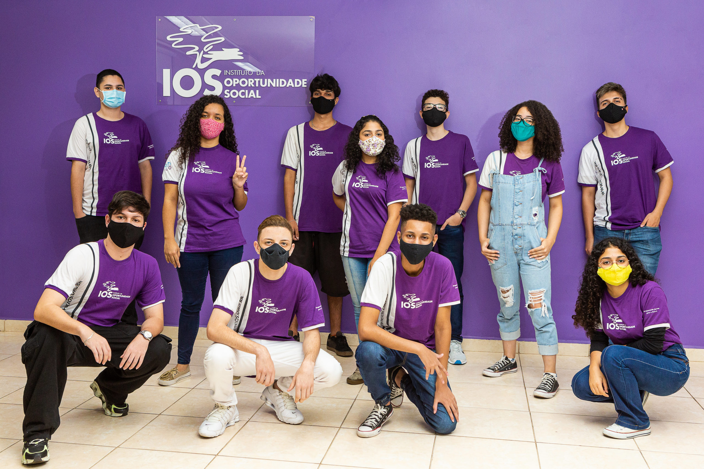

Quem somos?
O Instituto da Oportunidade Social (IOS) é uma Entidade Beneficente de Assistência Social certificada pelo CEBAS, que desde 1998 atua promovendo a formação profissional gratuita e a empregabilidade de jovens e Pessoas com Deficiência. O IOS forma profissionais que agregam em sua bagagem, além do conhecimento técnico e capacitação teórica, competências comportamentais que o mundo do trabalho busca, como o cuidado com as relações, respeito às diferenças, trabalho em equipe, solução criativa de problemas, sempre embasados por uma mentalidade inovadora.
Cursos Disponíveis
- Formação Accenture (Exclusivo para Pessoa com Deficiência)
- Fluência Digital com Microsoft Office
- Formação TIVIT (Exclusivo para Pessoa com Deficiência)
- Formação Suzano (Exclusivo para Pessoa com Deficiência)
- Educação Digital
- Programação Web
- Gestão empresarial com software ERP (ON-LINE)
- Montagem e manutenção de Computadores
- Gestão empresarial com software ERP (PRESENCIAL)
- Informática para o Mercado de trabalho/li>
- Tecnologia e Cultura Digital
- Informática prática e preparação p/ mercado de trabalho
- Suporte em TI
